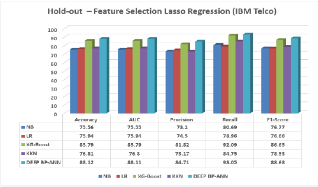
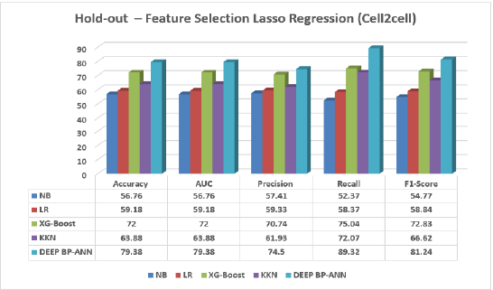

Exploración más profunda del tema: Customer Churn Prediction
Introducción
En el entorno competitivo de la industria de las telecomunicaciones, la retención de clientes se ha convertido en un desafío estratégico de primer orden. La capacidad para predecir cuándo un cliente podría abandonar un servicio —lo que se conoce como customer churn— representa una ventaja significativa en términos de optimización de campañas de retención, reducción de pérdidas económicas y fortalecimiento del valor de marca.
En este contexto, el uso de modelos de predicción basados en técnicas de Machine Learning y Deep Learning ha ganado una gran relevancia en los últimos años debido a su capacidad para modelar grandes volúmenes de datos con una alta precisión.
La presente bitácora se basa en la profundización de un estudio anterior centrado en la predicción de abandono de clientes utilizando aprendizaje profundo. El objetivo es investigar más a fondo la metodología empleada, identificar las técnicas más efectivas implementadas, y comprender cómo estas pueden ser replicadas o adaptadas para aplicaciones prácticas, como el desarrollo de un sistema propio basado en datos de clientes de telecomunicaciones.
El estudio de referencia es el artículo “Customer Churn Prediction in Telecommunication Industry Using Deep Learning” (Fujo, Subramanian y Khder, 2022), el cual propone un enfoque robusto y replicable que servirá de base para la implementación futura del código y análisis del modelo.
Exploración
El artículo plantea la implementación de una red neuronal profunda con retropropagación (Deep-BP-ANN) como alternativa más efectiva frente a técnicas tradicionales como regresión logística, KNN, Naïve Bayes o XGBoost.
El modelo fue entrenado y validado utilizando dos bases de datos ampliamente reconocidas en el área: IBM Telco y Cell2Cell, las cuales presentan escenarios reales de clientes y problemas típicos de desbalance de clases (entre clientes que permanecen y los que abandonan).
Metodología
Preprocesamiento de datos: Se aplicó imputación de valores faltantes, codificación de variables categóricas (label y one-hot encoding), y normalización de variables numéricas con varianza alta mediante
MinMaxScaler.Selección de características: Se usaron dos enfoques complementarios —Lasso Regression y Variance Thresholding— para eliminar atributos irrelevantes y mejorar la eficiencia del modelo.
Tratamiento del desbalance: Dada la desproporción entre clases (aproximadamente 26–29% de churn en ambos conjuntos), se utilizó Random Oversampling.
Arquitectura del modelo: El modelo Deep-BP-ANN fue optimizado con 250 neuronas por capa, dos capas ocultas, función de activación ReLU en capas internas y sigmoid en la capa de salida. También se emplearon:
- Early Stopping
- Activity Regularization
Evaluación del modelo: Se utilizaron validaciones Holdout y 10-fold Cross Validation, y métricas como:
- Accuracy
- Recall
- Precision
- F1-Score
- AUC
Resultados
Los resultados muestran que el modelo propuesto supera tanto a algoritmos tradicionales como a otros modelos de deep learning:
- 88.12% de exactitud en IBM Telco (holdout)
- 79.38% de exactitud en Cell2Cell
Esto representa mejoras respecto a modelos ANN previos (80–85%).
La calidad y relevancia de las variables predictoras incide más que el tamaño del dataset en el rendimiento del modelo.
Gráficos

Fuente: Fujo, Subramanian y Khder (2022)

Fuente: Fujo, Subramanian y Khder (2022)
Hallazgos Relevantes
- Las variables más influyentes en IBM Telco fueron el cargo total y la antigüedad del cliente.
- Se confirma que la calidad de las variables es más crítica que la cantidad de datos.
- El modelo Deep-BP-ANN superó a enfoques con CNN, ANN y transfer learning.
Referencias
Fujo, S. W., Subramanian, S., & Khder, M. A. (2022). Customer churn prediction in telecommunication industry using deep learning. Information Sciences Letters, 11(1), 185–198. https://digitalcommons.aaru.edu.jo/isl/vol11/iss1/24
DataCamp. (s.f.). Naive Bayes Classification with Scikit-Learn. Recuperado el 7 de junio de 2025 de https://www.datacamp.com/tutorial/naive-bayes-scikit-learn
Pedregosa, F., et al. (s.f.). Naive Bayes — scikit-learn 1.4.2 documentation. Recuperado el 7 de junio de 2025 de https://scikit-learn.org/stable/modules/naive_bayes.html
Enlace a repositorio GitHub: https://github.com/CisarUli/Proyecto_CA0305_Grupo_02